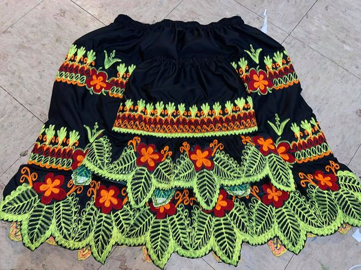
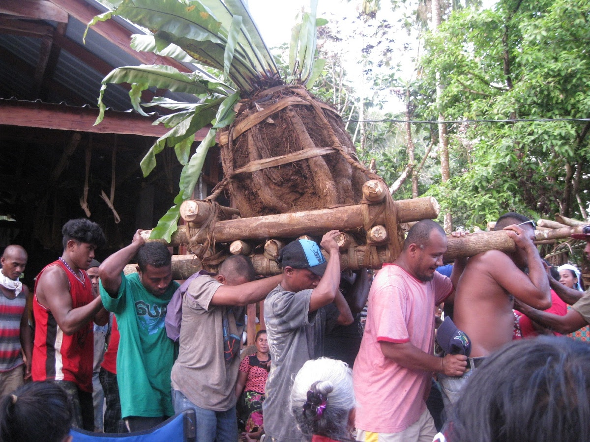
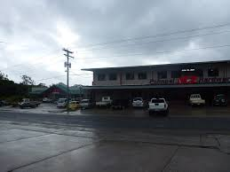

Culture day occurs once a year. The locals gather together and participate in ceremonial dances in order to remember their heritage and remind others as well.
Urohs are some of the last traditional clothing worn frequently. Many local women make and sell these to friends and tourists.
In order for men to move up in social status, it requires them to put effort and money into their yam ceremonies. These are usually big parties involving many drinks.
Although many areas of the island are fixed on ancestral habits, the main city of Kolonia boasts a lot of shops, including American grocery stores.